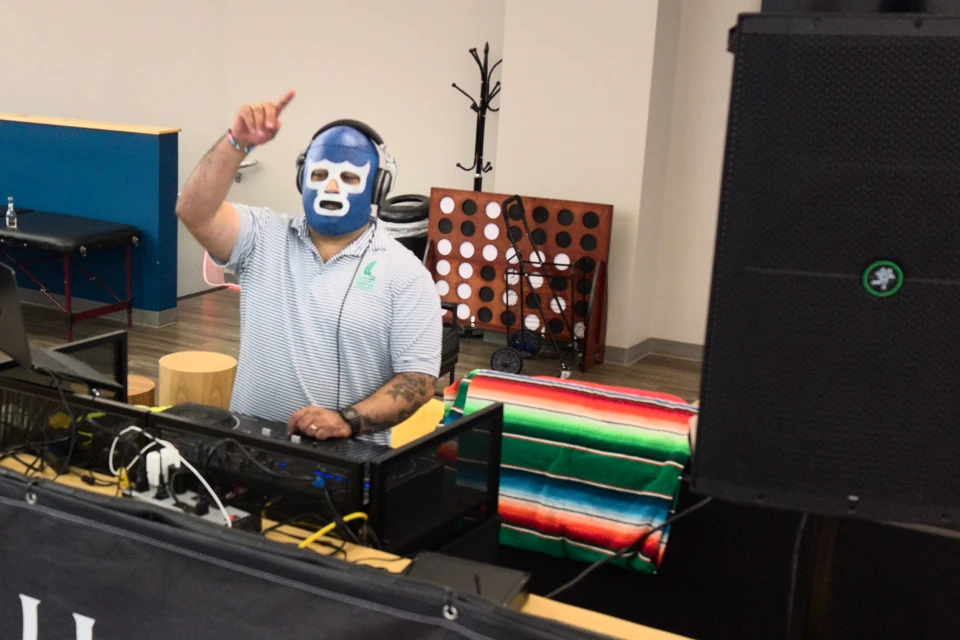
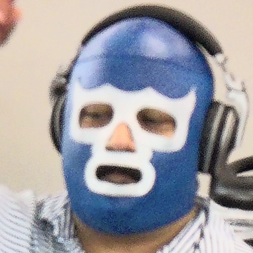
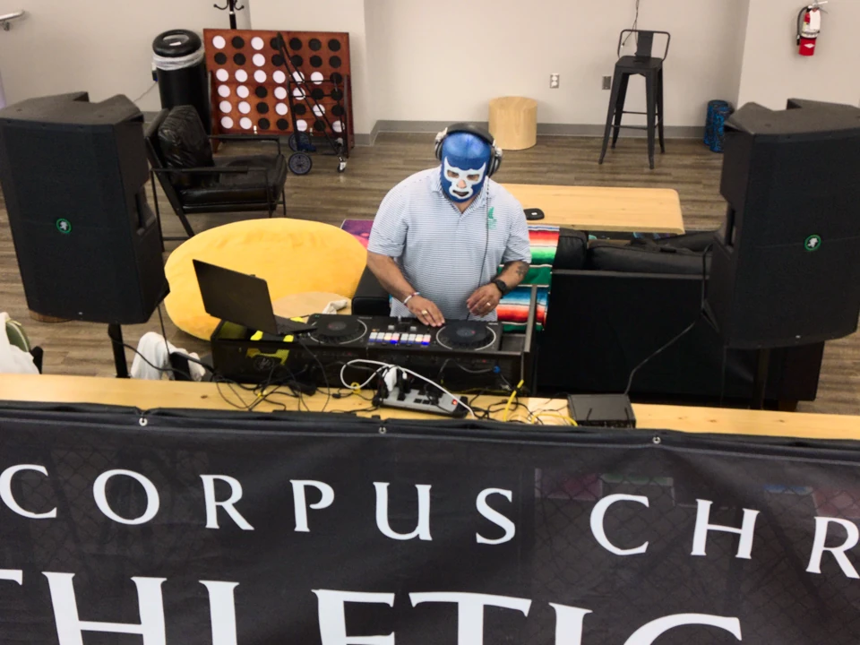
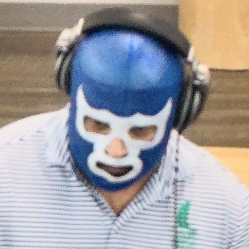
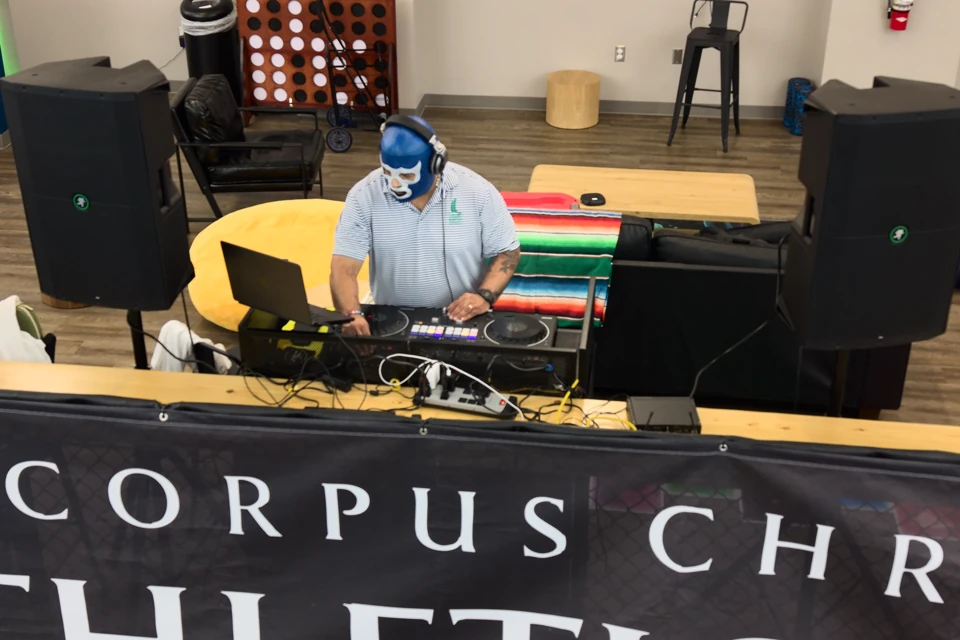
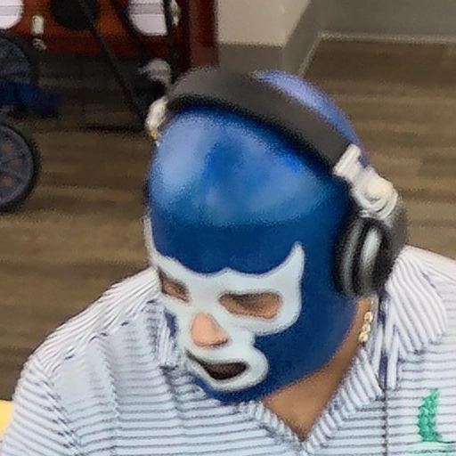

Back to crop review
Back to crop reviewMore definition from the original RAWs.
These three DJ photographs have been redeveloped from their DNG originals. Toggle the matching detail sections to compare the current gallery edit with a moderate sharpening and noise-reduction treatment. The four downloadable crops retain their native pixel dimensions.
DJ · Photo 02
ISO 800 · 1/160 sec · f/1.8



Same detail. Same magnification.

Fresh RAW detail
Matching 512 × 512 source-pixel sections. No enlargement or generated detail. On high-density screens, browser scale and device pixels differ.
DJ · Photo 32
ISO 800 · 1/160 sec · f/1.8


Same detail. Same magnification.

Fresh RAW detail
Matching 512 × 512 source-pixel sections. No enlargement or generated detail. On high-density screens, browser scale and device pixels differ.
DJ · Photo 34
ISO 140 · 1/30 sec · f/1.8


Same detail. Same magnification.

Fresh RAW detail
Matching 512 × 512 source-pixel sections. No enlargement or generated detail. On high-density screens, browser scale and device pixels differ.
What changed in processing
Embedded camera color profile, a lossless 16-bit TIFF intermediate, tuned RAW capture deconvolution, the approved color finish, and lightly blended noise reduction. Downloads use one final high-quality JPEG encode with full color sampling. No upscaling or invented detail.
Photo 34 was recorded at 1/30 second, which makes movement a possible contributor. Metadata alone cannot establish the cause of blur. The main gallery retains its existing full-frame photographs while these revised crops are presented for comparison.